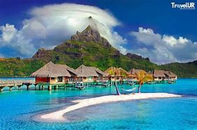

Country India Region South India Formation 1 November 1956 Capital Kavaratti Largest city Andrott Government • Body Government of Lakshadweep National Parliament Parliament of India • Lok Sabha Mohammed Faizal Padippura High Court Kerala High Court Area • Total 32.62 km2 (12.59 sq mi) • Rank 36th Population (2011) • Total 64,473 • Density 2,000/km2 (5,000/sq mi) Language • Official English[2] • Additional official Malayalam Time zone UTC+05:30 (IST) ISO 3166 code IN-LD Vehicle registration LD HDI (2019) 0.751 (4th) Literacy (2011) 91.85% Sex ratio (2011) 947♀/1000 ♂ (1st) Website lakshadweep.gov.in Symbols of Lakshadweep Emblem of Lakshadweep Bird Brown noddy Fish Butterfly fish Tree Bread fruit List of Indian state and union territory symbols Lakshadweep (Malayalam: [lɐkʂɐd̪βʷiːbɨ̆]) is a union territory of India. It is an archipelago of 35 islands[note 1] serving as the maritime boundary between the Arabian Sea to the west and the Laccadive Sea to the east. It is located 200 to 440 km (120 to 270 mi) off the Malabar Coast of India.[4] The name Lakshadweep means "one lakh islands" (Lakṣadvīpa; one hundred thousand islands) in Malayalam and Sanskrit, though the Lakshadweep Islands (previously known as Laccadive Islands) are just one part of the archipelago of no more than a hundred islands. Jeseri is the primary as well as the widely spoken native language in the territory.[5][6] The islands form the smallest union territory of India and their total surface area is approximately 32 km2 (12 sq mi). The lagoon area covers about 4,200 km2 (1,600 sq mi),[7] the territorial waters area 20,000 km2 (7,700 sq mi) and the exclusive economic zone area 400,000 km2 (150,000 sq mi).[8] The region forms a single Indian district with 10 subdivisions. Kavaratti serves as the capital of the Union Territory and the region comes under the jurisdiction of Kerala High Court.[9][10] The islands are the northernmost of the Lakshadweep–Maldives–Chagos group of islands, which are the tops of a vast undersea mountain range, the Chagos-Lakshadweep Ridge.[11] The Lakshadweep originally consisted of 36 islands; however, due to the Parali 1 island being submerged in water due to sea erosion, 35 islands remain.[12] The islands were also mentioned in the Buddhist Jataka stories of the sixth century BCE. Islam was established in the region when Muslims arrived around the seventh century. During the medieval period, the region was ruled by the Chera dynasty, the Chola dynasty, and finally the Kingdom of Kannur. The Catholic Portuguese arrived around 1498 but were expelled by 1545. The region was then ruled by the Muslim house of Arakkal, who were vassals to the Kolathiri Rajas of Kannur, followed by Tipu Sultan. On Tipu's death in 1799, most of the region passed on to the British and with their departure, the Union Territory was formed in 1956. Of the total 36 islands, 10 are inhabited. At the 2011 Indian census, the population of the Union Territory was 64,473. The majority of the indigenous population is Muslim and most of them belong to the Shafi school of the Sunni sect. The islanders are ethnically similar to the Malayali people of the nearest Indian state of Kerala. Most of the population speaks Jeseri with Dhivehi being the most spoken language in Minicoy island. Jeseri dialect is spoken in the inhabited islands of archipelago, namely Amindivi and Laccadive Islands, with an exception of the southernmost island of Minicoy,[13] where the Mahl dialect is used.[14] The Ponnani script of Malayalam was used to write Jeseri until the British Raj.[15] The culture is almost similar to that of Mappilas in the nearest mainland state of Kerala.[16] The islands are served by an airport on Agatti Island.[17] The main occupation of the people is fishing and coconut cultivation, with tuna being the main item of export.[18] History This section needs additional citations for verification. Please help improve this article by adding citations to reliable sources in this section. Unsourced material may be challenged and removed. Find sources: "Lakshadweep" – news · newspapers · books · scholar · JSTOR (January 2024) (Learn how and when to remove this template message) Ancient history As the islands have no aboriginal inhabitants, scholars have suggested different histories for the settlement of these islands. Archaeological evidence supports the existence of human settlement in the region around 1500 BCE, and Jataka stories of Buddhism mentioned these islands, which documented the spread of Buddhism to the islands during 6th century BCE.[19][20] Buddhist era archaeological finds are also notable, during Buddhist era monk Sanghamitra is believed to have visited the island.[21] The islands have long been known to sailors, as indicated by an anonymous reference from the first century CE to the region in Periplus of the Erythraean Sea.[22] There are references to the control of the islands by the Cheras in the Sangam Patiṟṟuppattu. Local traditions and legends attribute the first settlement on these islands to the period of Cheraman Perumal, the last Chera king of Kerala.[23] The oldest inhabited islands in the group are Amini, Kalpeni, Andrott, Kavaratti, and Agatti.